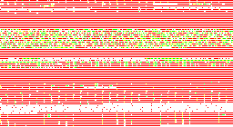

$ cdump -w32 <sample.png
0 PNGMJZJ@@@MIHDR@@@H@@@HA@@@@t
20 &@@@UIDATHc0]H@'PD3
40 %@@@@IENDB`
$ cdump <sample.pbm
0 P4.8.8.@`pxxp`@
$ cdump -w32 <cdump | head -n4
0 ?ELFBAA@@@@@@@@@C@>@A@@@P@@@@@@
20 @@@@@@@@=@@@@@@@@@@@@8@K@@@^@]@
40 F@@@D@@@@@@@@@@@@@@@@@@@@@@@@@@@
60 hB@@@@@@hB@@@@@@H@@@@@@@C@@@D@@@
$ cdump -Wlw32 <cdump.c | head -n4
1 #include.<stdio.h>J#include.<std
2 lib.h>J#include.<unistd.h>JJint.
5 option_debug;Jint.option_html;Ji
7 nt.option_line_number;Jint.optio
$ cdump -Wlr <cdump.c | head -n4
1 #include.<stdio.h>J
2 #include.<stdlib.h>J
3 #include.<unistd.h>J
4 J
$ perl -e 'print chr for(0..0xff)' |
> cdump -w16
0 @ABCDEFGHIJKLMNO
10 PQRSTUVWXYZ[\]^_
20 .!"#$%&'()*+,-./
30 0123456789:;<=>?
40 @ABCDEFGHIJKLMNO
50 PQRSTUVWXYZ[\]^_
60 `abcdefghijklmno
70 pqrstuvwxyz{|}~?
80
90
a0
b0
c0
d0
e0
f0
100
$ cdump -x <cdump | ed >cout.xpm

See yoheiy/cdump on GitHub for the source code.